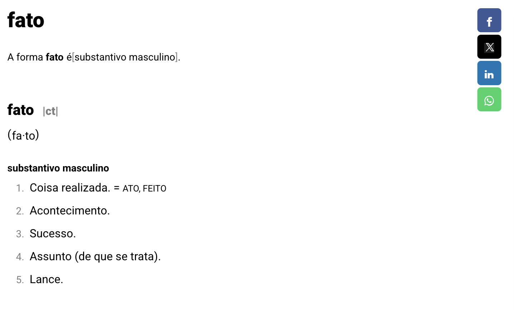
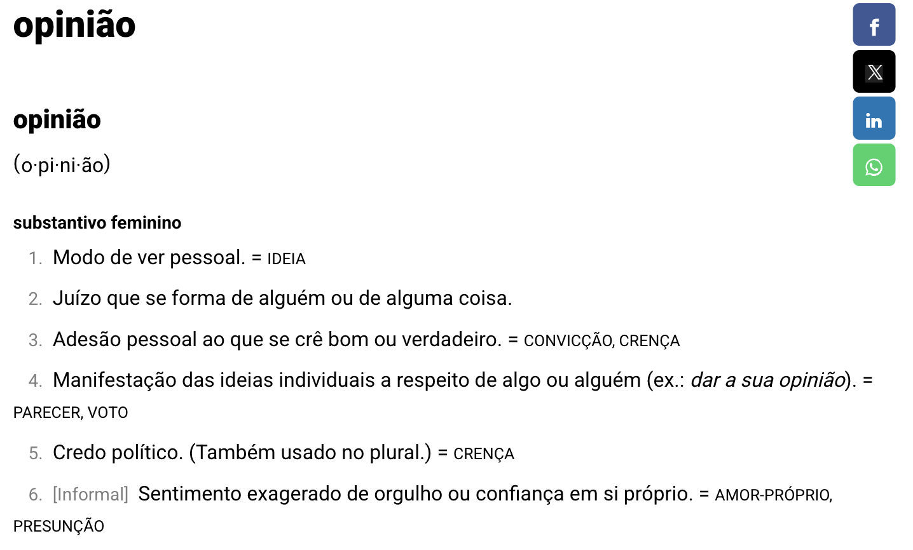

4 Autoria, opinião e escrita acadêmica3
4.1 Objetivos de aprendizagem
Ao final deste encontro e com base na leitura indicada, espera-se que você seja capaz de:
Reconhecer a diferença entre opinião e argumentos fundamentados.
Questionar pressupostos não evidenciados.
Praticar a reformulação de parágrafos opinativos em parágrafos acadêmicos
Leitura indicada:
Uma questão de opinião, capítulo do livro Como escrever um texto científico, de Fábio Appolinário e Isaac Gil.
4.2 Introdução
Como vimos anteriormente, o pensamento científico baseia-se em uma curiosidade ativa, no questionamento de pressupostos e na busca rigorosa por evidências, utilizando lógica e ceticismo para avaliar as informações de maneira objetiva. Além disso, considera alternativas, mantém-se aberto a novas ideias e promove a reflexão sobre as próprias crenças, sempre valorizando a replicabilidade e o aprendizado com erros e feedbacks. Esses pilares, mais do que ferramentas científicas, são práticas que enriquecem a análise crítica e a tomada de decisões em diversas situações.
Esses pilares do pensamento científico não apenas fundamentam a investigação científica, mas também guiam as práticas de leitura e escrita acadêmicas. Essas competências intelectuais formam a base para compreender, analisar e produzir textos acadêmicos de alta qualidade. A leitura criteriosa permite identificar as pistas essenciais nos textos, enquanto a escrita disciplinada e fundamentada em padrões normativos promove a clareza, a coesão e a credibilidade das ideias.
O desenvolvimento do pensamento científico está intrinsecamente ligado ao domínio da linguagem acadêmica, contribuindo para um percurso mais autônomo e qualificado no ambiente universitário.
4.4 Aprendizagem prática
Leia as frases abaixo e coloque (F) para FATO ou (O) para OPINIÃO.
1. O Sol é a principal fonte de luz natural para a Terra.
2. Viajar de avião é a forma mais confortável de transporte.
3. O Everest é a montanha mais alta do mundo.
4. Assistir filmes em casa é muito mais agradável do que no cinema.
5. O Brasil é o maior país da América do Sul em extensão territorial.
6. Chocolate é o melhor doce do mundo.
7. A água ferve a 100°C ao nível do mar.
8. A pizza de marguerita é a mais saborosa.
9. A cidade de São Paulo tem mais habitantes que qualquer outra cidade do Brasil.
10. Correr ao ar livre é a forma mais divertida de praticar exercícios.
Leia o parágrafo abaixo com atenção, extraído da obra “Como escrever um texto científico”, de Fábio Appolinário e Isaac Gil. Por que ele não pode ser cientificamente adequado?
As empresas brasileiras têm enfrentado enormes problemas em função da grande crise econômica pela qual passa nosso país, tendo assumido uma atitude preventiva e cautelosa no que se refere aos investimentos, notada-mente no setor de treinamento – que costuma ser o primeiro a sentir os cortes em crises desse porte.
Reescreva-o a fim de torná-lo cientificamente adequado.
Sugestão de reescrita dos autores
Segundo dados do Banco Central do Brasil (2009), em seis dos oito trimestres dos anos de 2008 e 2009 houve uma retração do PIB brasileiro entre 1,5% e 2,3%, o que, para alguns autores (por exemplo: KRAUSE, 2001; SILVEIRA, 2005) pode configurar uma “crise econômica”. Nesse mesmo período, em pesquisa exploratória realizada junto a gestores de recursos humanos nas empresas do setor industrial da região Sudeste do país, a Associação Brasi-leira de Recursos Humanos (2009) relatou uma intenção de cortes com gastos em treinamento de pessoal da ordem de 27,8%, para o ano de 2010. É possível hipotetizar, por-tanto que a retração econômica tenha levado a uma dimi-nuição na previsão de investimentos nessa área.
4.5 Considerações finais


“(…) uma característica importante da maioria das modalidades de textos científicos é exatamente a ausência da opinião.” p. 11
“(…) não há espaço para a enunciação de juízos de valor, que possuem caráter opinativo ou especulati-vo.” p. 11
“(…) o texto monográfico deve se ater a:
(a) descrição, comparação ou análise de teorias e conceitos desenvolvidos por outros autores,
(b) apresentação de dados secundários de pesquisa (dados coletados por outros autores e devidamente citados no texto) ou
(c) apresentação e análise de dados primários (dados coletados pelo próprio aluno e apresentados no trabalho)” p. 11
Roteiro de aula elaborado no RStudio com o auxílio da inteligência artificial ChatGPT, revisado e avaliado pelo autor antes de sua publicação.↩︎